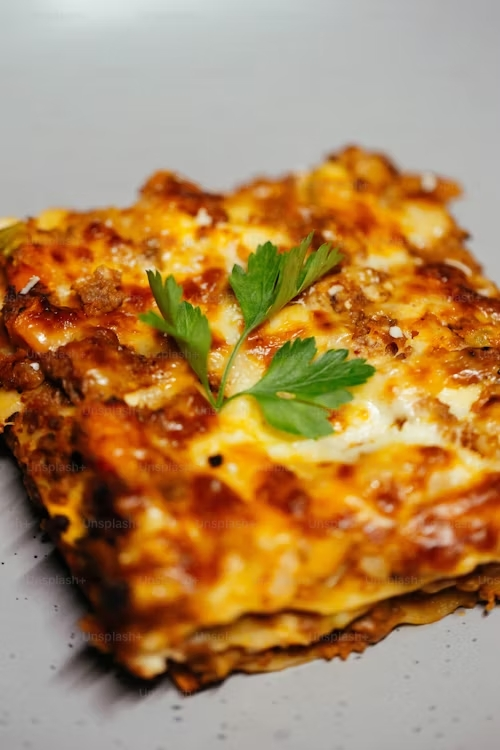

Lasagna

Description
Lasagna is a type of wide, flat pasta, possibly one of the oldest types of pasta. Lasagna, or the singular lasagna, commonly refers to a culinary dish made with stacked layers of pasta alternated with sauces and ingredients such as meats, vegetables and cheese, and sometimes topped with melted grated cheese. Typically, the cooked pasta is assembled with the other ingredients and then baked in an oven. The resulting lasagna casserole is cut into single-serving square portions.
- Ingredients
- 1 pound sweet Italian sausage
- 3/4 pound lean ground beef
- 1/2 cup minced onion
- 2 cloves garlic, crushed
- 1 (28 ounce) can crushed tomatoes
- 2 (6 ounce) cans tomato paste
- 2 (6.5 ounce) cans canned tomato sauce
- 1/2 cup water
- 2 tablespoons white sugar
- 1 1/2 teaspoons dried basil leaves
- 1/2 teaspoon fennel seeds
- 1 teaspoon Italian seasoning
- 1 tablespoon salt
- 1/4 teaspoon ground black pepper
- 4 tablespoons chopped fresh parsley
- 12 lasagna noodles
- 16 ounces ricotta cheese
- 1 egg
- 3/4 teaspoon salt
- 3/4 pound mozzarella cheese, sliced
- 3/4 cup grated Parmesan cheese
- Directions
- In a Dutch oven, cook sausage, ground beef, onion, and garlic over medium heat until well browned.
- Stir in crushed tomatoes, tomato paste, tomato sauce, and water.
- Season with sugar, basil, fennel seeds, Italian seasoning, 1 tablespoon salt, pepper, and 2 tablespoons parsley.
- Simmer, covered, for about 1 1/2 hours, stirring occasionally.